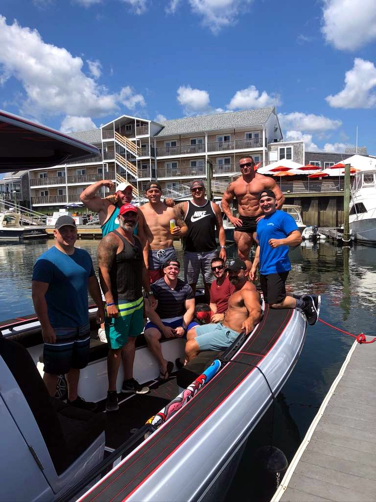
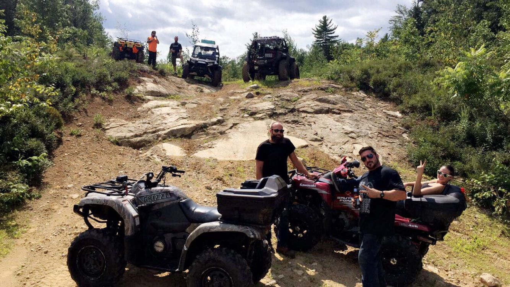
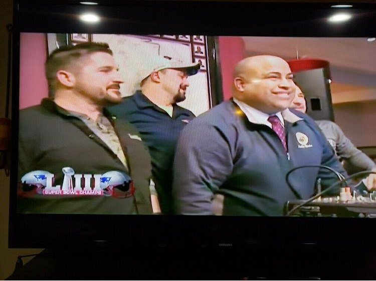

Photo, voice, notes, job details, and AI-assisted report generation.
AI roofing technology and workflow systems
Building practical AI tools for real job-site work.
Barry Billcliff has focused his technology work on systems that reduce manual follow-up, capture field conditions more accurately, and turn roofing knowledge into usable customer reports, calls, summaries, scheduling steps, and business records.
Inbound calls, follow-up calls, scheduling, summaries, and customer files.
Roofing proposals, customer context, reviews, collections, seasonal lists, and office handoffs.
Technology Focus
AI systems built around the roofing business, not around a demo.
The strongest technology story for Barry Billcliff is the work built around Merrimack Valley Roofing: an MVR SiteReport field app for structured site visits, AI-assisted report generation, proposal-aware customer follow-up, job closeout review workflows, collections escalation, sales-training agents, website and Messenger assistants, content campaign systems, property prospecting tools, and custom voice agents that help answer calls, organize files, schedule work, update callback timing, and keep customers moving through the process.
MVR SiteReport
A field reporting app for job-site visits where crews can add customer information, take or upload photos, record audio, dictate notes, and build a clean site visit record from the field.
AI Report Builder
The report workflow combines field opinions with trained roofing references, preferred materials, building-code context, state statutes, and installation best practices before producing a polished PDF report.
Voice Assistant
A custom phone assistant helps handle roofing conversations, gather lead details, update customer files, answer roofing questions, schedule site visits, and route follow-up back to the office.
MVR SiteReport
From job-site photos and voice notes to a finished roofing report.
Capture the site
The app supports live camera capture or image upload for each job-site condition, with customer details attached to the visit from the beginning.
Add expert opinion
Each image can be paired with a voice recording or speech-to-text explanation describing what is visible, what matters, and how the issue should be prepared.
Review the beta draft
The system produces an editable draft so values, recommendations, and details can be adjusted before the final report is created.
Deliver the report
The final output is formatted on Merrimack Valley Roofing letterhead with cleaned images, image-by-image detail, and PDF delivery for email, text, print, or customer records.
Voice Assistant Systems
Automating the customer calls that used to consume hours every week.
The first assistant component focused on follow-up calls, a task that could take eight to ten hours a week. It was trained around Merrimack Valley Roofing, roofing-industry questions, customer service tone, and the practical goal of bringing the conversation back to how the company could help the customer.
The system grew into a broader phone workflow: a designated Twilio number, registered so the business line is identified properly, outbound batch calling, inbound call answering, telemarketer filtering, appointment intake, customer summaries, transcripts, and immediate text and email notifications to Barry when a live customer needs attention.
As the voice became natural enough to gather customer information on the first incoming call, the workflow expanded. A customer file could start with the inbound call, gain more site-visit context later, then gain even more detail when the proposal PDF was uploaded before follow-up calls began.
PDF proposals can be added so the assistant understands warranty details, dates, foremen, materials, options, techniques, and customer-specific context.
The assistant gathers name, phone, address, and problem description, then creates a customer file and supports scheduling a foreman site visit.
Follow-up calls, callbacks, review requests, account closeout, and collections calls can be handled with company-specific context.
Adaptive Follow-Up Engine
Customer callbacks that change based on the actual conversation.
Two-week cadence
If a call only reaches voicemail, the system keeps the customer on the calendar and follows up about two weeks later with a different version of the same call.
Human timing requests
If a customer answers and asks for a specific callback time, such as 6:00 PM when someone else is home, the schedule can move to that real requested time.
Seasonal timing
If a customer wants to wait until fall or agrees on a date like September 15, the next follow-up can be moved to that seasonal start date.
File movement buttons
Customer files can move between categories, such as active call lists and seasonal lead lists, so the system reflects the current sales reality.
Seasonal lead lists
Seasonal work such as gutter cleaning, ice dam removal, and roof shoveling can stay organized for future outreach. Customers can remain in the relevant seasonal list unless they no longer want to work with Merrimack Valley Roofing.
Job Closeout and Review Engine
Completed jobs become customer context, review outreach, and future seasonal relationship management.
Closeout context
When a job is completed, a closeout form can be filled out, copied into the customer's digital file, and added to the context the assistant uses for future outreach.
Review status
On the MVR calling-agent site, the closeout report can be uploaded and the file can be moved into review status with a dedicated button.
Voice plus SMS
Follow-up, review, and sales calls can be paired with text messages explaining who called and why, including voicemail summaries and callback requests.
Two-way texting
If a customer texts back to the same number, the assistant can continue the conversation by text with the same file context it would use on a voice call.
Review conversation design
The review workflow asks customers five practical questions: their first impression, the sales and management experience, the workers, the process, and what they liked or did not like.
From that feedback, the system drafts a review for the customer to edit or use, sends it by text, includes Merrimack Valley Roofing's review link, and walks the customer through signing into Google, copying the text, and posting only if they choose to share it.
Edit customer information, add notes, add proposals, remove proposals, move the file, ask for a review, or delete the file when appropriate.
Completed-job customers can be called about every two weeks with a review request informed by the closeout file and company-specific review needs.
After the review workflow, the customer file can move into seasonal leads for future gutter, ice dam, roof shoveling, and related outreach.
Collections Agent
A staged collections workflow that stays organized, polite, and document-ready.
Open invoice reminder
The first step is a simple, polite reminder that the invoice is still open and needs attention.
Timely payment request
If the invoice remains open, the agent can move to a clearer request for payment in a timely manner while keeping the tone professional.
Payment demand
The next stage can escalate to a firmer payment demand with the customer file, invoice context, and prior outreach history available.
Final timeline
If needed, the workflow can provide a final timeline to pay before the matter is prepared for possible civil court filing.
Court-ready documentation
If payment still is not made, the system can collect the customer file, invoice details, communication history, supporting documents, and a full summary for courthouse filing if that step is ever needed. The goal is to be prepared, while keeping escalation organized and professional.
Sales Training and B2B Outreach Agent
A trained calling system for professional trade-partner outreach.
Sales training base
The agent was trained around sales education, seminar-style training material, and roofing-specific business development needs for Merrimack Valley Roofing.
Ice dam response
The workflow grew out of a major ice dam season, when roofing customers also needed interior support from painters, drywall companies, and related trades.
Partner lists
Large lists of business contacts can be uploaded so the system has names, phone numbers, company details, and outreach context before calls begin.
Professional cold calls
The agent is designed to call business owners professionally, explain the reason for outreach, and solicit trade partnerships in a focused, respectful way.
Business-to-business purpose
The goal is not generic telemarketing. It is targeted B2B coordination so Merrimack Valley Roofing can connect with interior contractors and better service customers whose roofing issues also create interior repair needs.
Website and Facebook Messenger Assistants
The same trained assistant logic extended beyond phone calls.
Facebook Messenger
Customers messaging Merrimack Valley Roofing through Facebook Messenger can receive responses from the same trained assistant system.
Website pop-up
A small virtual assistant on the website can answer questions, gather lead information, and keep customers moving without waiting for a phone call.
Shared training
The messaging assistants use the same company-specific roofing knowledge, customer-service direction, and Merrimack Valley Roofing workflow context.
Same task coverage
The assistant can collect customer details, answer roofing questions, support scheduling, update files, and route important follow-up back to the office.
One assistant across channels
The goal is a consistent customer experience whether someone calls, texts, uses Facebook Messenger, or opens the website chat: the agent has the same training, tone, and practical workflow responsibilities.
OpenClaw Marketing and Content Campaigns
Turning roofing knowledge into blog, press, and Q&A campaigns.
Blog site buildout
Using OpenClaw, Barry started building a blog-style content system focused on Merrimack Valley Roofing's expertise and service areas.
Press releases
The workflow supports press-release style content that frames company updates, seasonal roofing issues, and useful homeowner information.
Roofing Q&A
Question-and-answer articles can address common roofing concerns, explain what homeowners should look for, and naturally point back to MVR's role.
Creative campaigns
The system helps turn field knowledge, customer questions, seasonal problems, and roofing education into repeatable marketing campaigns.
Practical promotion
The goal is to promote Merrimack Valley Roofing by publishing useful roofing information, not empty advertising: helpful blogs, Q&A pages, and press-style updates that demonstrate experience and answer real customer questions.
Property Prospecting and Inspection Outreach
Finding roofs that may be ready for a professional inspection.
Municipal site adapters
Custom adapters can crawl local city and town websites to identify properties built roughly 20 to 25 years ago, when roof replacement may become more relevant.
Owner and property records
The workflow can connect addresses to owner-of-record information and organize property records into a structured lead review list.
Imagery review
Satellite imagery and large roofing-condition context can help prioritize properties that may show roof-age or roof-condition signals worth reviewing.
Permit-history filtering
Properties with recent roofing permits can be removed from the list, along with properties whose roof condition appears strong enough to deprioritize.
From records to inspection outreach
After the list is narrowed, contact information can be enriched through lookup tools and approved data providers, then routed into a dedicated calling workflow.
The outreach goal is straightforward: contact likely-fit homeowners professionally and offer a free roof inspection from Merrimack Valley Roofing.
Phone and owner details can be supplemented through lookup services such as Whitepages, reverse lookup tools, RealPeople-style searches, LexisNexis, and approved list providers when more complete customer information is needed.
The system prioritizes likely inspection opportunities instead of treating every older property as a sales target.
The final list can feed a purpose-built calling agent trained to offer free inspections with professional context.
Platform Stack
Connected tools behind the workflow
ChatGPT
Used as the intelligence layer for interpreting notes, images, proposal context, roofing knowledge, and customer conversation history.
Vercel
Used for web app delivery and workflow surfaces that connect the field app, report generation, and broader MVR systems.
AWS
Used to support durable memory, stored customer context, system state, and backend workflow infrastructure.
GoHighLevel
Used as part of the customer workflow, CRM, calling, follow-up, and sales-process environment.
ElevenLabs
Used to build a custom voice experience designed to sound closer to Barry's actual speaking style.
Twilio
Used for the designated business phone line, outbound calls, inbound call handling, and phone-system integration.
Apple App Store
MVR SiteReport is distributed as a free App Store app for field reporting, inspection notes, images, and AI-assisted report generation.
View App Store listingMVR Workflow
The technology is designed to connect with the rest of the Merrimack Valley Roofing workflow instead of sitting apart from daily operations.
Project Visuals
Business, systems, and technology archive







Current enhancements
A stronger public profile for the systems Barry has built.
The page now focuses on working tools: field reports, proposal context, call automation, customer summaries, and workflow integration.
The language connects the AI systems to job-site conditions, materials, building standards, customer files, and report delivery.
The build stack is named clearly, including ChatGPT, Vercel, AWS, GoHighLevel, ElevenLabs, Twilio, and the App Store app.